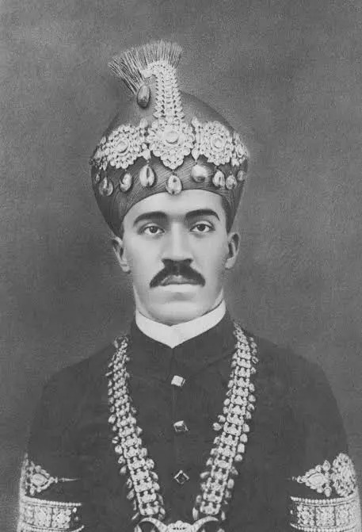

HAALAT-E-ZINDAGI (LIFE SKETCH)
| Mir Osman Ali Khan was born in 1886 and ascended the throne in 1911. His era was defined by the establishment of the State Bank of Hyderabad and Osmania University. He was a pioneer in introducing modern administrative systems while preserving local heritage and secular values. His vision for a self-sufficient state led to the creation of the Osmania Rupee, making Hyderabad the only princely state with its own currency, postal system, and railway network. He worked tirelessly to integrate traditional culture with modern education. | Under his rule, the city saw the birth of Osmania General Hospital, the High Court, and the State Central Library. As a visionary engineer in spirit, he built the Osman Sagar and Himayat Sagar dams to protect the city from devastating Musi floods. He donated millions to educational institutions like Aligarh and Banaras Universities. His architectural legacy transformed the skyline into a unique blend of Indo-Saracenic styles, and his social reforms ensured that every citizen had access to justice and opportunity regardless of their background. | Despite being the world's richest man, the Nizam chose to live in a single room and wore simple cotton clothes. He was famous for his frugal habits but was incredibly generous during national crises. During World War II, his contributions were vital, yet he remained a man of the people, avoiding the luxuries his vast fortune could provide. He was often seen smoking local brands and spent his evenings in quiet contemplation or meeting with advisors to discuss the welfare of the poorest in his kingdom. |
 His death marks the end of an era. The Deccan will forever remember him as the man who modernized Hyderabad. He leaves behind a legacy of tolerance and progress. Even in his final days, his concern was for the welfare of his subjects and the preservation of the cultural fabric of his beloved city. His funeral is expected to be attended by people from all walks of life, showing the deep respect and love the citizens held for their monarch who ruled with a soft heart and a firm hand for the state's progress. |